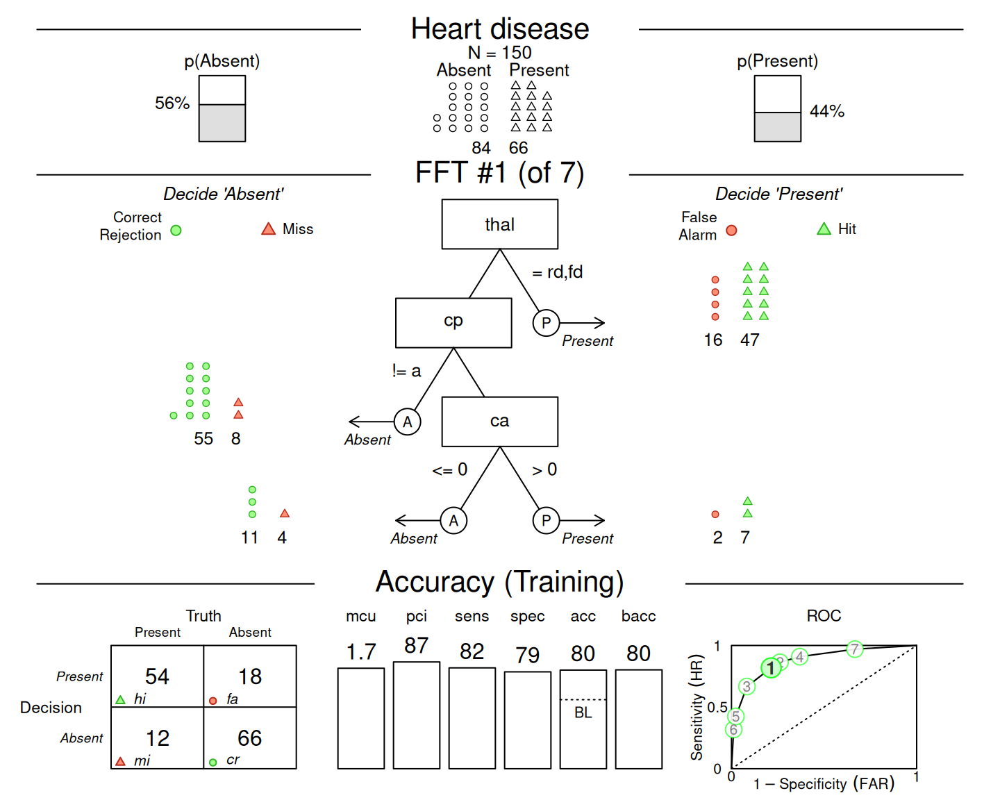
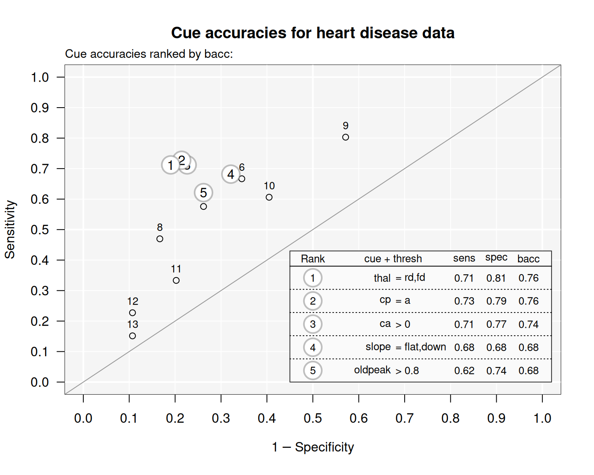
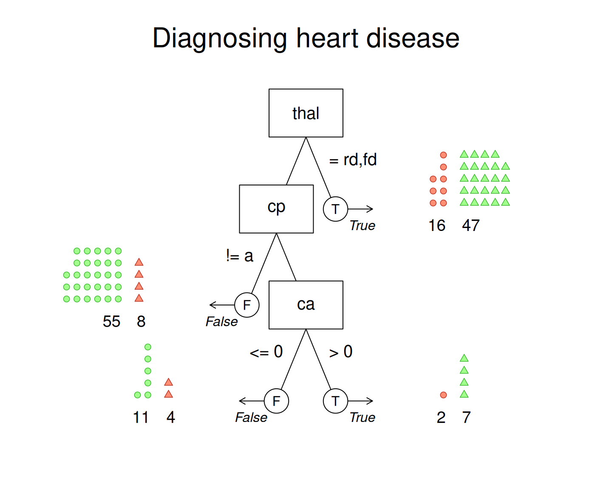
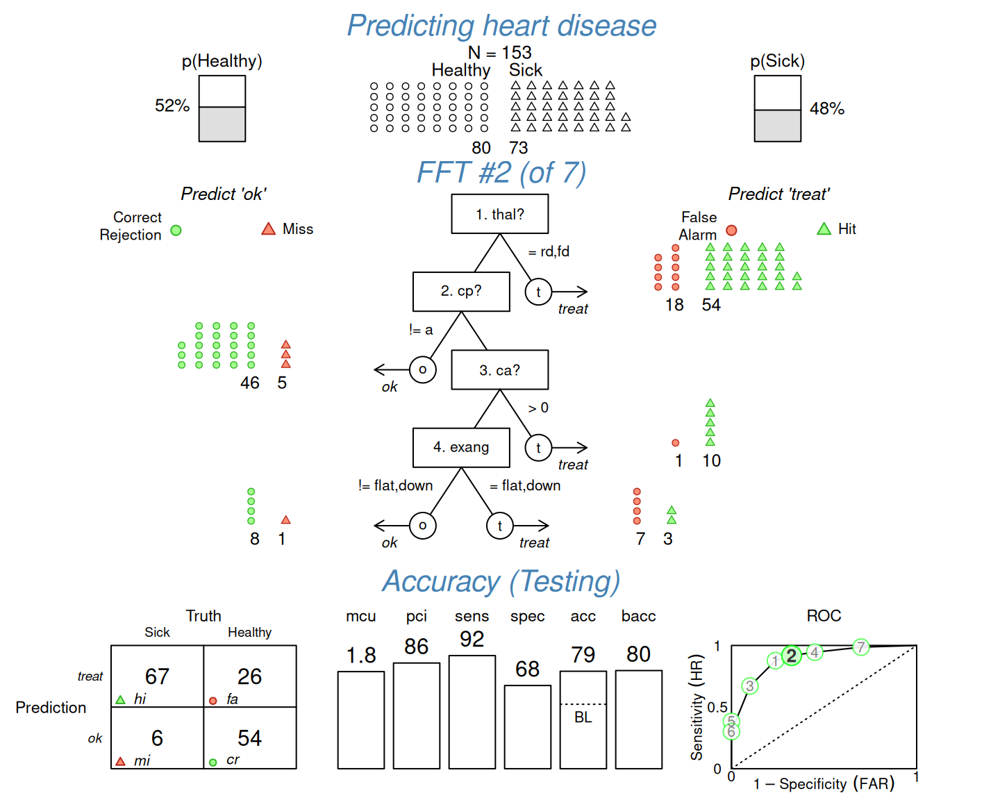
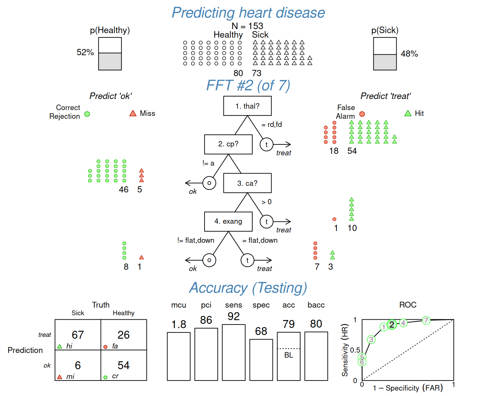

plot.FFTrees visualizes an FFTrees object created by the FFTrees function.
plot.FFTrees is the main plotting function of the FFTrees package and
called when evaluating the generic plot on an FFTrees object.
plot.FFTrees visualizes a selected FFT, key data characteristics, and various aspects of classification performance.
As x may not contain test data, plot.FFTrees by default plots the performance characteristics
for training data (i.e., fitting), rather than for test data (i.e., for prediction).
When test data is available, specifying data = "test" plots prediction performance.
Whenever the sensitivity weight (sens.w) is set to its default of sens.w = 0.50,
a level shows balanced accuracy (bacc). If, however, sens.w deviates from its default,
the level shows the tree's weighted accuracy value (wacc) and the current sens.w value (below the level).
Many aspects of the plot (e.g., its panels) and the FFT's appearance (e.g., labels of its nodes and exits) can be customized by setting corresponding arguments.
Usage
# S3 method for class 'FFTrees'
plot(
x = NULL,
data = "train",
what = "all",
tree = 1,
main = NULL,
cue.labels = NULL,
decision.labels = NULL,
truth.labels = NULL,
cue.cex = NULL,
threshold.cex = NULL,
decision.cex = 1,
comp = TRUE,
show.header = NULL,
show.tree = NULL,
show.confusion = NULL,
show.levels = NULL,
show.roc = NULL,
show.icons = NULL,
show.iconguide = NULL,
hlines = TRUE,
label.tree = NULL,
label.performance = NULL,
n.per.icon = NULL,
level.type = "bar",
which.tree = NULL,
decision.names = NULL,
stats = NULL,
grayscale = FALSE,
...
)Arguments
- x
An
FFTreesobject created by theFFTreesfunction.- data
The type of data in
xto be plotted (as a string) or a test dataset (as a data frame).A valid data string must be either
'train'(for fitting performance) or'test'(for prediction performance).For a valid data frame, the specified tree is evaluated and plotted for this data (as 'test' data), but the global
FFTreesobjectxremains unchanged unless it is re-assigned.
By default,
data = 'train'(asxmay not contain test data).- what
What should be plotted (as a character string)? Valid options are:
- 'all'
Plot the tree diagram with all corresponding guides and performance statistics, but excluding cue accuracies.
- 'cues'
Plot only the marginal accuracy of cues in ROC space. Note that cue accuracies are not shown when calling
what = 'all'and use theshowcuesfunction.- 'icontree'
Plot tree diagram with icon arrays on exit nodes. Consider also setting
n.per.iconandshow.iconguide.- 'tree'
Plot only the tree diagram.
- 'roc'
Plot only the performance of tree(s) (and comparison algorithms) in ROC space.
Default:
what = 'all'.- tree
The tree to be plotted (as an integer, only valid when the corresponding tree argument is non-empty). Default:
tree = 1. To plot the best training or best test tree with respect to thegoalspecified during FFT construction, use'best.train'or'best.test', respectively.- main
The main plot label (as a character string).
- cue.labels
An optional string of labels for the cues / nodes (as character vector).
- decision.labels
A character vector of length 2 indicating the content-specific names for noise vs. signal predictions/exits.
- truth.labels
A character vector of length 2 indicating the content-specific names for true noise vs. signal cases (using `decision.labels` if unspecified).
- cue.cex
The size of the cue labels (as numeric).
- threshold.cex
The size of the threshold labels (as numeric).
- decision.cex
The size of the decision labels (as numeric).
- comp
Should the performance of competitive algorithms (e.g.; logistic regression, random forests, etc.) be shown in the ROC plot (if available, as logical)?
- show.header
Show header with basic data properties (in top panel, as logical)?
- show.tree
Show nodes and exits of FFT (in middle panel, as logical)?
- show.confusion
Show a 2x2 confusion matrix (in bottom panel, as logical)?
- show.levels
Show performance levels (in bottom panel, as logical)?
- show.roc
Show ROC curve (in bottom panel, as logical)?
- show.icons
Show exit cases as icon arrays (in middle panel, as logical)?
- show.iconguide
Show icon guide (in middle panel, as logical)?
- hlines
Show horizontal panel separation lines (as logical)? Default:
hlines = TRUE.- label.tree
A label for the FFT (optional, as character string).
- label.performance
A label for the performance section (optional, as character string).
- n.per.icon
The number of cases represented by each icon (as numeric).
- level.type
The type of performance levels to be drawn at the bottom (as character string, either
"bar"or"line". Default:level.type = "bar".- which.tree
Deprecated argument. Use
treeinstead.- decision.names
Deprecated argument. Use
decision.labelsinstead.- stats
Deprecated argument. Should statistical information be plotted (as logical)? Use
what = "all"to include performance statistics andwhat = "tree"to plot only a tree diagram.- grayscale
logical. If
TRUE, the plot is shown in grayscale.- ...
Graphical parameters (passed to text of panel titles, to
showcueswhenwhat = 'cues', or totitlewhenwhat = 'roc').
See also
showcues for plotting cue accuracies;
print.FFTrees for printing FFTs;
summary.FFTrees for summarizing FFTs;
FFTrees for creating FFTs from and applying them to data.
Other plot functions:
showcues()
Examples
# Create FFTs (for heartdisease data):
heart_fft <- FFTrees(formula = diagnosis ~ .,
data = heart.train)
#> ✔ Created an FFTrees object.
#> Ranking 13 cues: ■■■■■■■■ 23% | ETA: 1s
#> Ranking 13 cues: ■■■■■■■■■■■■■■■■■ 54% | ETA: 0s
#> Ranking 13 cues: ■■■■■■■■■■■■■■■■■■■■■■■■■■■■■■■ 100% | ETA: 0s
#>
#> ✔ Ranked 13 cues (optimizing 'bacc').
#> ✔ Created 7 FFTs with 'ifan' algorithm (chasing 'bacc').
#> ✔ Defined 7 FFTs.
#> ✔ Applied 7 FFTs to 'train' data.
#> ✔ Ranked 7 FFTs by 'train' data.
#> ✔ Expressed 7 FFTs in words.
# Visualize the default FFT (Tree #1, what = 'all'):
plot(heart_fft, main = "Heart disease",
decision.labels = c("Absent", "Present"))

# Visualize cue accuracies (in ROC space):
plot(heart_fft, what = "cues", main = "Cue accuracies for heart disease data")
#> Plotting cue training statistics:
#> — Cue accuracies ranked by bacc
#>

# Visualize tree diagram with icon arrays on exit nodes:
plot(heart_fft, what = "icontree", n.per.icon = 2,
main = "Diagnosing heart disease")

# Visualize performance comparison in ROC space:
plot(heart_fft, what = "roc", main = "Performance comparison for heart disease data")
 # Visualize predictions of FFT #2 (for new test data) with custom options:
plot(heart_fft, tree = 2, data = heart.test,
main = "Predicting heart disease",
cue.labels = c("1. thal?", "2. cp?", "3. ca?", "4. exang"),
decision.labels = c("ok", "treat"), truth.labels = c("Healthy", "Sick"),
n.per.icon = 2,
show.header = TRUE, show.confusion = TRUE, show.levels = TRUE, show.roc = TRUE,
hlines = FALSE, font = 3, col = "steelblue")
#> Applying FFTrees object x to new test data...
#> ✔ Applied 7 FFTs to 'test' data.
#> Success, but re-assign output to x or use fftrees_apply() to globally change x

# # For details, see
# vignette("FFTrees_plot", package = "FFTrees")
# Visualize predictions of FFT #2 (for new test data) with custom options:
plot(heart_fft, tree = 2, data = heart.test,
main = "Predicting heart disease",
cue.labels = c("1. thal?", "2. cp?", "3. ca?", "4. exang"),
decision.labels = c("ok", "treat"), truth.labels = c("Healthy", "Sick"),
n.per.icon = 2,
show.header = TRUE, show.confusion = TRUE, show.levels = TRUE, show.roc = TRUE,
hlines = FALSE, font = 3, col = "steelblue")
#> Applying FFTrees object x to new test data...
#> ✔ Applied 7 FFTs to 'test' data.
#> Success, but re-assign output to x or use fftrees_apply() to globally change x

# # For details, see
# vignette("FFTrees_plot", package = "FFTrees")